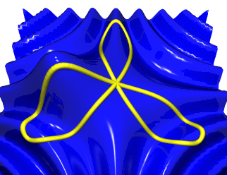
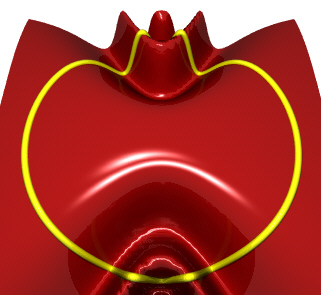

Synthesis
Features
Departments

Terrain Mapping with Dynamic Surfaces
Hans Mikelson
Introduction
In this article I will describe terrain mapping of dynamically modulated surfaces. Terrain mapping results in a large number of parameters which can be controlled and dynamical systems provide an interesting way to control a large number of parameters so the two processes compliment each other.
Terrain mapping is accomplished by tracing a surface with a path or orbit. Samples are generated from the height of the surface along the path. I like to use three (or more) dimensional mathematical surfaces for this. I will usually try several different equations until I generate a surface which looks interesting. I then select an orbit which will work well with this surface. Rose curves seem to make nice orbits because they pass through the center point and can be set up to have different numbers of lobes to catch interesting features of the surface. Sine and cosine functions are useful for adding waves or ridges to the surface. Functions of the form 1/(1+x^2) can be used to add hills or valleys to the surface.
The Planet Surface

Figure 1. z = cos(x*y) + 1/(1 + ((x+2)*(x+2) + y*y)) r = sin(3*t)
Figure 1 shows a three dimensional surface being scanned by a three lobed rose curve. The ridges occurring roughly in the shape of a cross or '+' sign come from the equation cos(x*y). In addition there is a hill located on the left side of the surface. The parameters defining this surface are modulated by the output of the planet opcode. The position of the hill is controlled by the X and Y coordinates of planet. The frequency of the ridges is controlled by the Z coordinate of planet. The overall amplitude of the surface is controlled by the sum of the X, Y and Z coordinates from planet.
Following is the Csound code for this:
; Mass1 Mass2 Sep X Y Z VX VY VZ h Friction axp, ayp, azp planet imass1, imass2, 2.2, 2, .1, .1, .5, .6, -.1, .0002, .01 ascal = 100 + .1*(ayp + axp +azp) arosl oscil 4, 3.01*ifqc, 1 ; Rose Curve axl oscil arosl, ifqc, 1, .10 ; Convert from polar to ayl oscil arosl, ifqc, 1, .35 ; rectangular coordinates ahill = 1/(10+(axl-axp*.1)*(axl-axp*.1)+(ayl-ayp*.1)*(ayl-ayp*.1)) azl = ascal*cos((1+azp*.1)*(axl+1)*(ayl+1)*.7)*ahill
The X and Y coordinates for the rose curve are generated using three oscil statements. A moving hill is created and added to a rippled Z surface. The Z value is finally scaled and output.
The Lorenz Surface
Figure 2 shows a surface a complex surface traced by a circle. I create hills and valleys on this surface using equations of the form 1/(1+exp(x)). The position of the hills is determined by the X and Y coordinates generated by the lorenz opcode. The frequency of the ridges is controlled by the Z coordinate of lorenz.

Figure 2. z = cos(y*y/(2+x*x)) r = 4
The Csound code for instrument 2 is:
; Lorenz system axl, ayl, azl lorenz 10, 28, 8/3, .00001, 9.8, 17.6, 14.8, 1 ax oscil 4, ifqc, 1 ; Convert from polar to ay oscil 4, ifqc, 1, .25 ; rectangular coordinates ascal = 1+.02*(axl+ayl+azl) ahv = 4/(1+exp(ax-axl))-4/(1+exp(ay-ayl)) azl = ascal*cos((1+.04*ayl)*ay*ay/(2+ax*ax*(1+.04*azl)))+ahv
Conclusion
The methods presented in this article seem most useful in generating long slowly evolving drones and pads. I have only presented instruments where the parameters of the surface are modulated by the dynamical system but I have also experimented with controlling the parameters of the orbits with the dynamical system.
A rose curve is a polar equation of the form
r=sin(N*theta)
The parameter N determines the number of lobes the rose curve will have. If N is odd then the rose curve will have N lobes. If N is even then the rose curve will have 2*N lobes. If N is not an integer then a complex shape results in which each loop does not line up on top of next.
The images for this article were created using POVRay. This program is to 3D imaging what Csound is to sound. Following are links for the Perl script used to create the images in this article as well as links to the POVRay and Perl homepages:
trigraph2pl.txt Script used to create the images in this article.
http://www.povray.org/ The POVRay home page.
http://www.perl.com/ The Perl home page.